5 Analiza szeregów czasowych
5.1 Pojęcia wstępne
Szereg czasowy to ciąg pomiarów z kolejnych momentów/okresów czasu.
Szereg czasowy jest szeregiem okresów jeżeli dotyczy strumieni (zasobów). Przykładowo liczba urodzeń żywych w powiecie kwidzyńskim w latach 2010–2019, to szereg okresów. W szczególności można dodać liczbę urodzeń w poszczególnych latach otrzymując łączną liczbę urodzonych w tym okresie.
Urodzenia żywe w powiecie kwidzyńskim w latach 2010--2019
2010 | 2011 | 2012 | 2013 | 2014 | 2015 | 2016 | 2017 | 2018 | 2019
------+------+------+------+------+------+------+------+------+------
965 | 937 | 907 | 821 | 831 | 785 | 813 | 861 | 834 | 833
Źródło: https://bdl.stat.gov.pl/W latach 2010–2019 w powiecie kwidzyńskim urodziło się 965 + 937 + … + 833 = 8587 dzieci (średnio 858,7 rocznie).
Albo szereg czasowy jest szeregiem momentów jeżeli dotyczy stanów. Przykładowo liczba ludności powiatu kwidzyńskiego w latach 2010–2019 (stan na 31.12), to szereg czasowy momentów.
Ludność ogółem w powiecie kwidzyńskim w latach 2010--2019
2010 | 2011 | 2012 | 2013 | 2014 | 2015 | 2016 | 2017 | 2018 | 2019
------+------+-------+------+------+------+------+------+------+------
83562 |83734 | 83783 |83611 |83627 |83464 |83495 |83423 |83291 | 83174
Źródło: https://bdl.stat.gov.pl/(Zwróćmy uwagę że taki szereg zwykle w tytule ma magiczną formułę stan na dzień-miesiąc – w przykładzie stan na ostatni dzień roku) Nie można sumować liczby mieszkańców z kolejnych lat, bo taka suma nie ma merytorycznie sensu. Można podać średnią (przeciętny stan) ludności jako wartość średniej chronologicznej:
\[\bar x_{ch} = \frac{(\frac{1}{2} x_1 + x_2 + ... + x_{n-1} + \frac{1}{2} x_{n} )}{n-1} = (83562/2 + 83734 + ... + 83291 + 83174/2)/9 = 83532,9\]
Średnia roczna liczba ludności w powiecie kwidzyńskim w latach 2010–2019 wyniosła zatem 83532,9 mieszkańców.
Szeregi czasowe mogą różnić się częstotliwością (dzienna, tygodniowa, miesięczna, kwartalna, roczna).
Wykres kropkowy zwykle się nie sprawdza. Jeżeli przebieg zjawiska nie jest uporządkowany, albo wykres zawiera kilka zmiennych (w przykładzie dwie zmienne). to wynikiem jest chmura różnokolowych kropek, w której trudno się połapać.
Wykres liniowy zwykle daje najlepsze rezultaty.
Wykres słupkowy z półprzeźroczystymi słupkami też zwykle się nie sprawdza (w przykładzie jeden słupek zawsze zachodzi na drugi, co w rezultacie prowadzi do sytuacji, że turkusowego koloru w ogóle nie ma na wykresie)
Wykres słupkowy ze słupkami przylegającymi do siebie (grupowany) jest dobrą alternatywą dla wykresu liniowego.
5.2 Przyrosty i indeksy
Oznaczmy wartość zmiennej \(Y\) w okresie \(t\) jako \(y_t\) (mówi się okres badany) oraz wartość zmiennej \(Y\) w okresie \(0\) jako \(y_0\) (okres podstawowy).
Przyrost absolutny to po prostu \(y_t - y_0\). Jeżeli obliczamy przyrosty dla wielu okresów, to można je porównywać do jednego okresu/momentu (\(y_1\) w zapisie poniżej):
\[y_2 - y_1, y_3 - y_1, \ldots, y_{n-1} - y_1, y_{n} - y_1\]
lub dla poprzedniego okresu/momentu
\[y_2 - y_1, y_3 - y_2, \ldots, y_{n-1} - y_{n-2}, y_{n} - y_{n-1}\]
W pierwszym przypadku mówimy o przyrostach jednopodstawowych, w drugim zaś o przyrostach łańcuchowych. Zwróćmy uwagę, że podstawa nie musi być równa pierwszej wartości. Może to być np. wartość ostatnia lub środkowa:
\[y_1 - y_n, y_2 - y_n, \ldots, y_{n-2} - y_n, y_{n-1} - y_n\]
Interpretacja: o ile wzrosła/spadła wielkość zjawiska w okresie badanym w porównaniu do podstawowego w jednostkach zmiennej \(Y\) oczywiście.
Przyrost względny to \((y_t - y_0)/y_0\) Jeżeli obliczamy przyrosty dla wielu okresów, to podobnie jak
miało to miejsce w przypadku przyrostów absolutnych możemy się posługiwać
indeksami jednopodstawowymi lub łańcuchowymi.
Przyrost względny zwykle wyrażone są w procentach jeżeli \(y_t = 115\) a \(y_0 = 100\), to \((y_t - y_0)/y_0 \cdot 100 =115\). Zjawisko ma o 15% wyższy poziom w roku \(t\).
Wskaźniki dynamiki (indeksy) określają względną zmianę wartości szeregów czasowych (popularny procent zmiany), czyli \(y_t/y_0\). Jeżeli podstawą porównań jest okres poprzedni \(y_t/y_{t-1}\) to indeks nazywany jest łańcuchowym, jeżeli podstawa porównań jest stała, tj. \(y_t/y_{c}\), to indeks nazywany jest jednopodstawowy.
Indeks zwykle wyrażone są w procentach jeżeli \(y_t = 115\) a \(y_0 = 100\), to $y_t/y_0 =15 $. Zjawisko ma o 15% wyższy poziom w roku \(t\).
Używamy średniej geometrycznej do obliczenia średniego tempa zmian zjawiska w czasie:
\[\bar y_g = \sqrt[n-1]{y_n/y_1}\]
Przykład: Zwiedzający Muzeum Zamkowe w Malborku w latach 2015–2016
| rok-miesiąc | zwiedzający | (1) | (2) | (3) | (4) | (5) | (6) |
|---|---|---|---|---|---|---|---|
| 2015-01 | 3278 | NA | 0 | NA | 0.00 | NA | 100.00 |
| 2015-02 | 4149 | 871 | 871 | 26.57 | 26.57 | 126.57 | 126.57 |
| 2015-03 | 4623 | 474 | 1345 | 11.42 | 41.03 | 111.42 | 141.03 |
| 2015-04 | 13083 | 8460 | 9805 | 183.00 | 299.12 | 283.00 | 399.12 |
| 2015-05 | 68485 | 55402 | 65207 | 423.47 | 1989.23 | 523.47 | 2089.23 |
| 2015-06 | 66199 | -2286 | 62921 | -3.34 | 1919.49 | 96.66 | 2019.49 |
| 2015-07 | 105843 | 39644 | 102565 | 59.89 | 3128.89 | 159.89 | 3228.89 |
| 2015-08 | 95255 | -10588 | 91977 | -10.00 | 2805.89 | 90.00 | 2905.89 |
| 2015-09 | 28021 | -67234 | 24743 | -70.58 | 754.82 | 29.42 | 854.82 |
| 2015-10 | 13532 | -14489 | 10254 | -51.71 | 312.81 | 48.29 | 412.81 |
| 2015-11 | 4382 | -9150 | 1104 | -67.62 | 33.68 | 32.38 | 133.68 |
| 2015-12 | 3204 | -1178 | -74 | -26.88 | -2.26 | 73.12 | 97.74 |
| 2016-01 | 3382 | 178 | 104 | 5.56 | 3.17 | 105.56 | 103.17 |
| 2016-02 | 6772 | 3390 | 3494 | 100.24 | 106.59 | 200.24 | 206.59 |
| 2016-03 | 5361 | -1411 | 2083 | -20.84 | 63.54 | 79.16 | 163.54 |
| 2016-04 | 18435 | 13074 | 15157 | 243.87 | 462.39 | 343.87 | 562.39 |
| 2016-05 | 73453 | 55018 | 70175 | 298.44 | 2140.79 | 398.44 | 2240.79 |
| 2016-06 | 70743 | -2710 | 67465 | -3.69 | 2058.11 | 96.31 | 2158.11 |
| 2016-07 | 109008 | 38265 | 105730 | 54.09 | 3225.44 | 154.09 | 3325.44 |
| 2016-08 | 116078 | 7070 | 112800 | 6.49 | 3441.12 | 106.49 | 3541.12 |
| 2016-09 | 37274 | -78804 | 33996 | -67.89 | 1037.10 | 32.11 | 1137.10 |
| 2016-10 | 14841 | -22433 | 11563 | -60.18 | 352.75 | 39.82 | 452.75 |
| 2016-11 | 5416 | -9425 | 2138 | -63.51 | 65.22 | 36.49 | 165.22 |
| 2016-12 | 3369 | -2047 | 91 | -37.80 | 2.78 | 62.20 | 102.78 |
Zawartość kolumn: (1) przyrosty łańcuchowe, (2) przyrosty jednopodstawowe (2015-01=100%), (3) przyrosty względne łańcuchowe, (4) przyrosty względne jednopodstawowe (2015-01=100%), (5) indeksy łańcuchowe, (6) indeksy jednopodstawowe (2015-01=100%).
5.3 Indeksy agregatowe
Jeżeli celem jest porównanie wielu różnych dóbr należy znaleść wspólny mianownik, którym jest zwykle cena albo koszty. Załóżmy że jest to cena. Dysponujemy informacją na temat wielkości sprzedaży pewnej grupy \(i\) dóbr w okresie \(1\), tj. \(q_{1i}\) oraz w okresie \(0\), tj. \(q_{0i}\). Dysponujemy także informacją na temat cen tych \(i\) dóbr w okresie \(1\), tj. \(p_{1i}\) oraz w okresie \(0\), tj. \(p_{0i}\).
Agregatowy indeks wartości jest definiowany jako:
\[I_w = \frac{\sum_i q_{1i} p_{1i}}{ \sum_i q_{0i} p_{0i}}\]
Indeks ten określa jak widać zmianę względną wartości grupy towarów w okresie \(1\) w porówaniu do okresu \(0\).
Można też szacować wpływ zmiany cen i ilości towarów oddzielnie stosując następujące formuły
agregatowy indeks ilości Laspeyresa:
\[I^L_q = \frac{\sum_i q_{1i} p_{0i}}{ \sum_i q_{0i} p_{0i}}\]
agregatowy indeks ceny Laspeyresa:
\[I^L_p = \frac{\sum_i q_{0i} p_{1i}}{ \sum_i q_{0i} p_{0i}}\]
agregatowy indeks ilości Paaschego:
\[I^P_q = \frac{\sum_i q_{1i} p_{1i}}{ \sum_i q_{0i} p_{1i}}\]
agregatowy indeks ceny Paaschego:
\[I^P_p = \frac{\sum_i q_{1i} p_{1i}}{ \sum_i q_{0i} p_{1i}}\]
Interpretacja: przy przyjęciu poziomu cen z okresu \(x\) ceny/ilości zmieniły się o \(y\) procent. Co jest \(x\)em zależy od przyjętej formuły standaryzacyjnej.
5.4 Wykresy
W przypadku szeregów czasowych wykres liniowy (ewentualnie punktowy lub słupkowy) jest najpopularniejszy. Przykład: z bazy danych WHO (https://www.who.int/data/gho) pobrano informacje nt odsetka osób dorosłych z nadwagą (BMI 30 i więcej; Prevalence of obesity among adults…) dla Polski w latach 1975–2016.
Uwaga: WHO podaje wskaźniki surowe (crude) i standaryzowane; pobrano surowe
Wykres liniowy
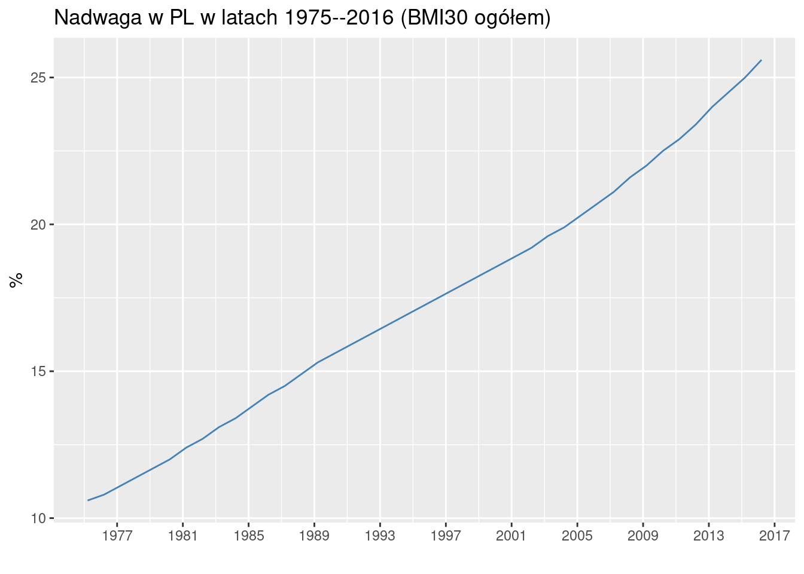
Interpretacja: czy zjawisko rośnie czy spada; jak szybko rośnie jak szybko spada.
Uwaga: można manipulować wykresem poprzez zmianę proporcji (współczynnika proporcji czyli po angielsku aspect ratio)
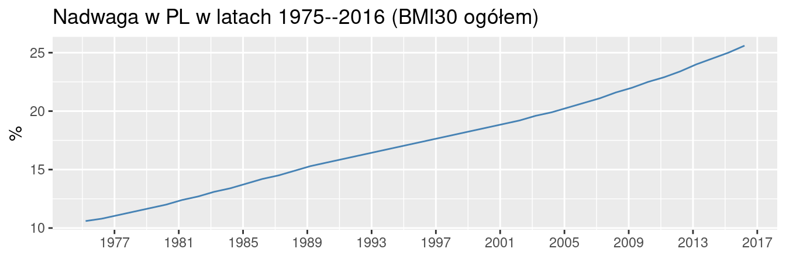
Teraz (optycznie) wolniej rośnie (proporcja wysokość/szerokość jest większa)…
Oraz (albo raczej pośrednio) zakresem na osi OY;
Jeżeli oś OY nie zaczyna się od zera to krzywa będzie bardziej stroma bo efektywnie wykres będzie miał większe proporcje wysokość/szerokość:
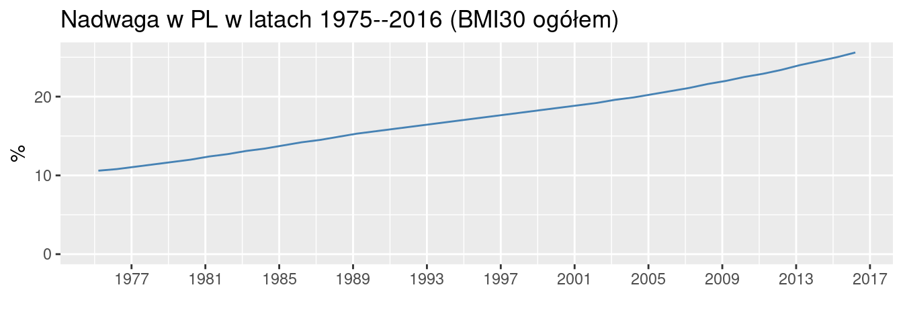
Puryści uważają że każdy wykres powinien zaczynać się od zera. Są przykłady zeznań przed komisją senacją w USA gdzie dowody prezentowane na wykresach z niezerową linią bazową były dyskwalifikowane jako manipulacja.
Słynna książka How to lie with statistics zawiera rozdział na temat zatytułowany The Gee-Whiz Graphs; https://en.wikipedia.org/wiki/Misleading_graph
Można umieścić wiele krzywych celem porównania:
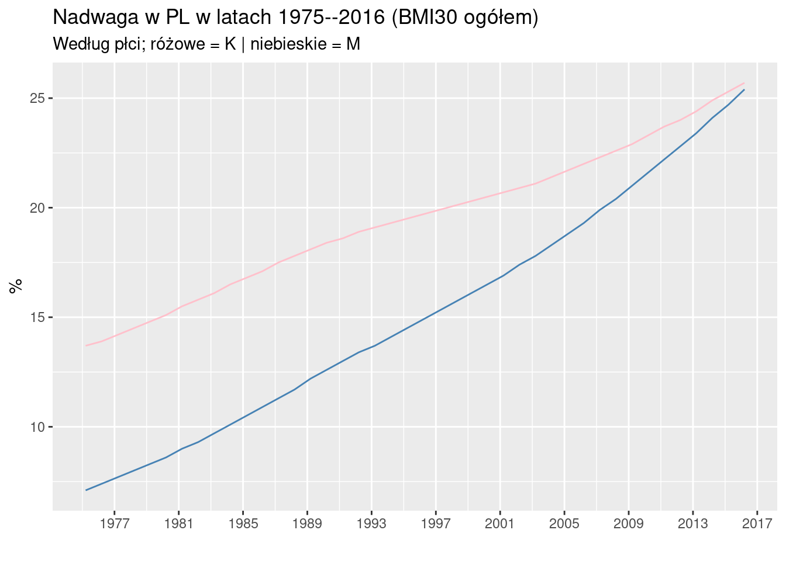
Jeżeli krzywe się dobrze zachowują (czytaj: nie przecinają się) na to sens; w innym przypadku trudno jest porównać krzywe. Nie należy też przesadzać z liczbą krzywych na wykresie. Na pewno coś co wygląda jak splątany makaron będzie bezużyteczne…
Punktowy:

Nie uważam za dobry pomysł. Nie podkreśla ciągłości zjawisk w czasie
Słupkowy:
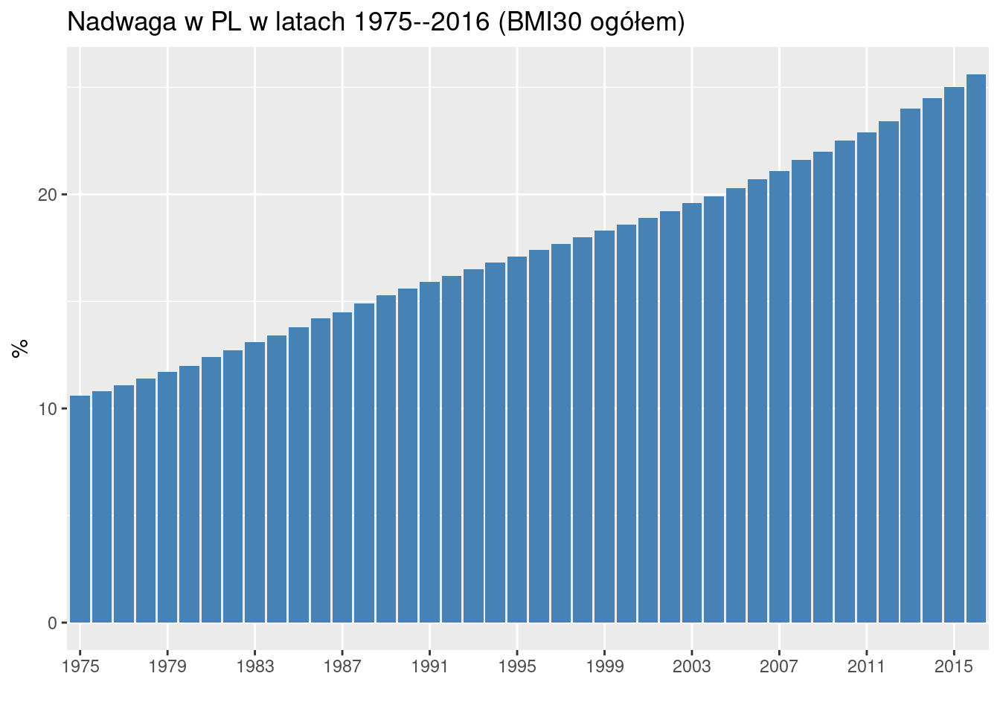
Jest OK. Ale wielosłupki zamiast wielu linii prowadzą do problemów:
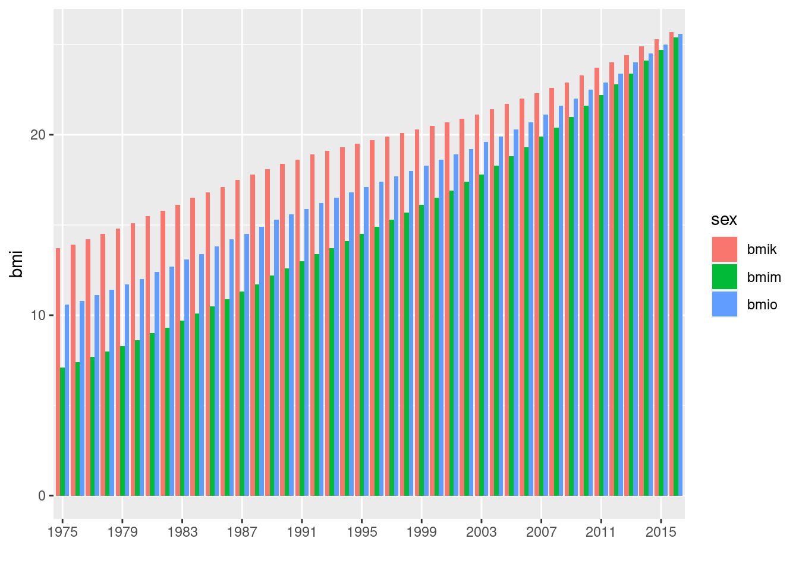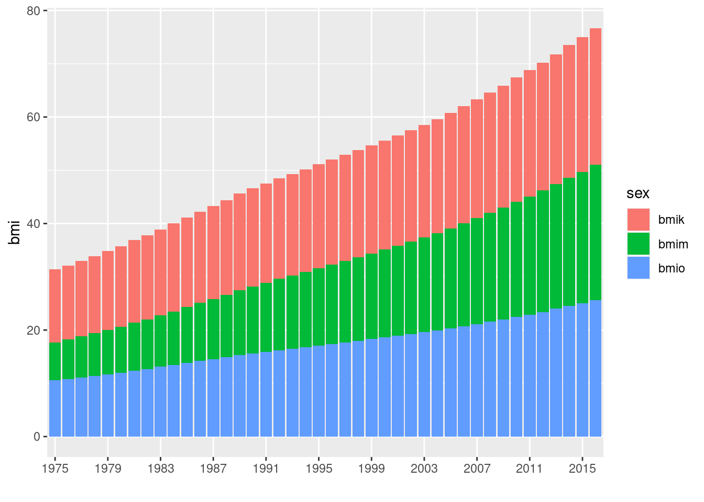
Oba dla mnie nieczytelne a do tego ten drugi wykres daje mylne wrażenie że łącznie otyłych jest 3/4 ludności (jak ktoś nieuważnie czyta)
5.5 Model wahań w czasie
W szeregu czasowym można zwykle wyróżnić długookresową tendencję (trend); powtarzalne wahania (sezonowość); resztę traktuje się jako wartości przypadkowe. Reasumując:
\[TS = T + S + E\]
lub
\[TS = T \cdot S \cdot E\]
Pierwszy wariant nazywa się addytywny drugi multiplikatywny. W wariancie addytywnym zmiany (trendu/sezonowości) okres/okres są stałe; w wariancie multiplikatywnym tempo zmiany jest stałe, tj. zjawisko okres/okres rośnie/spada o x%. W jednostkach bezwzględnych oznacza to, że rośnie/spada coraz szybciej.
Problem: oszacowanie \(T\) oraz \(S\)
5.6 Szacowanie trendu
5.6.1 Metoda mechaniczna MA
Średnia ruchoma (moving average MA). Idea tego wygładzania jest prosta: sumujemy kolejne wartości szeregu i dzielimy przez liczbę elementów sumy (średnia \(k\)-okresowa); Ile elementów sumujemy jest dobierane metodą prób/błędów…
średnia trzy okresowa
\[\bar y_{n-1} = (y_{n-2} + y_{n-1} + y_n)/3\]
\[\bar y_{n-2} = (y_{n-4} + y_{n-1} + y_n)/5\] scentrowana czterookresowa:
\[\bar y_{n-2} = \frac{\frac{1}{2} y_{n-4} + y_{n-3} + y_{n-2} +y_{n-1} + \frac{1}{2} y_n }{4}\]
Przykład dzienne dane nt. liczby zgonów z powodu COVID (w okresie 1.10.2020–5.2.2021; źródło komunikaty MZ via Twitter a od 28.01.2021 https://www.gov.pl/web/koronawirus/wykaz-zarazen-koronawirusem-sars-cov-2; strona reklamowana przez Google!):
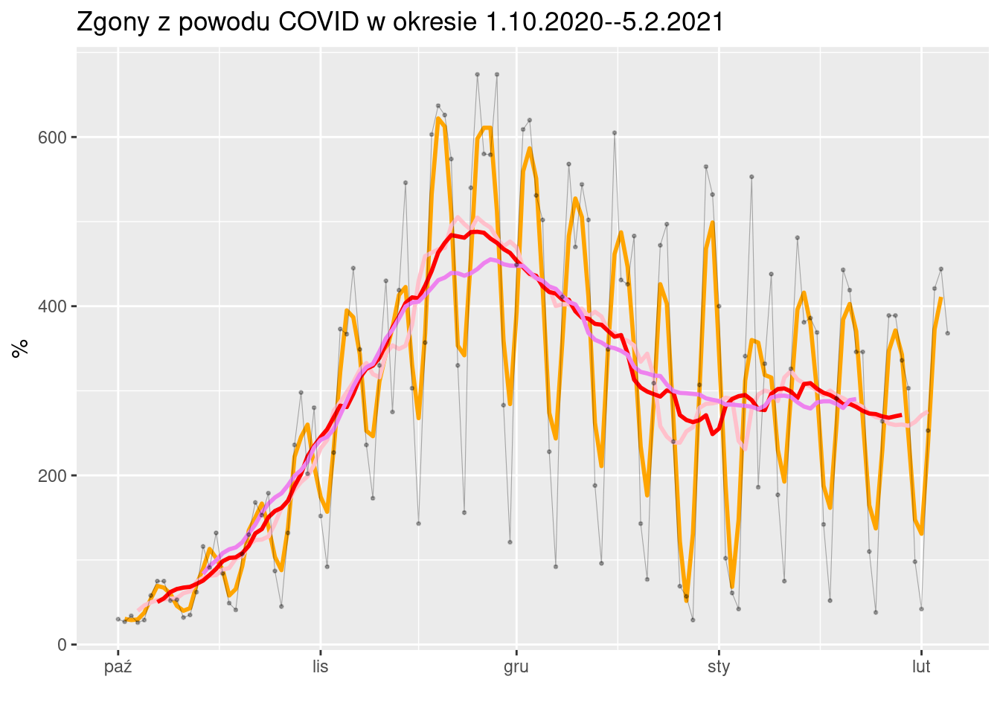
Na powyższym wykresie mamy 4 średnie ruchome 3, 7, 14, 28 okresową. Średnia trzy okresowa jest za mało wygładzona. Średnie 7, 14, 28 są podobne ale każda kolejna jest krótsza.
Najlepsza średnia ruchoma: 7 okresów. (Dostatecznie wygładza trend i jest najdłuższa)
5.6.2 Metoda analityczna
Polega na dopasowaniu określonej funkcji matematycznej; w najprostszym przypadku prostej przy użyciu metody najmniejszych kwadratów, czyli zakłada się że trend jest postaci:
\[Y = a + b \cdot t + e\]
gdzie: \(e\) oznacza składnik losowy;
Parametry \(a\) i \(b\) są wyznaczane w taki sposób aby suma kwadratów różnic pomiędzy punktami na prostej, a odpowiadającymi im obserwacjami empirycznymi była jak najmniejsza.
Wielkość tej sumy (lub pierwiastek kwadratowy z sumy) jest miarą dokładności dopasowania (wariancja składnika losowego; albo średni błąd składnika losowego/resztowego – dla pierwiastka kwadratowego):
\[S_y = \sqrt{\frac{1}{n-2} \sum_{i=1}^n (y_t - \hat y_t)^2}\]
o ile średnio wartości empiryczne odchylają się od wartości teoretycznych wyznaczonych na podstawie funkcji trendu.
Udział wariancji składnika losowego w całości wariancji zmiennej \(Y\) jest inną miarą dopasowania (znaną jako współczynnik determinacji \(\Phi^2\):
\[\Phi^2 = \frac{\sum_{t=1}^n}{(y_t - y_t)^2}{\sum_{t=1}^n (y_t - \bar y_t)^2}\]
im ten udział jest mniejszy tym lepiej (lub jeżeli współczynnik zdefiniujemy jako 1 minus \(\Phi^2\) to im większy tym lepiej – współczynnik zbieżności czyli \(R^2\))
współczynnik zmienności resztowej:
\[V_{sy}=\frac{S_y}{\bar y_t}\cdot 100\]
Przykład Dane nt zgonów z powodu COVID w okresie 1.10.2020–5.2.2021 (linia niebieska trend dopasowany metodą Najmniejszych Kwadratów)
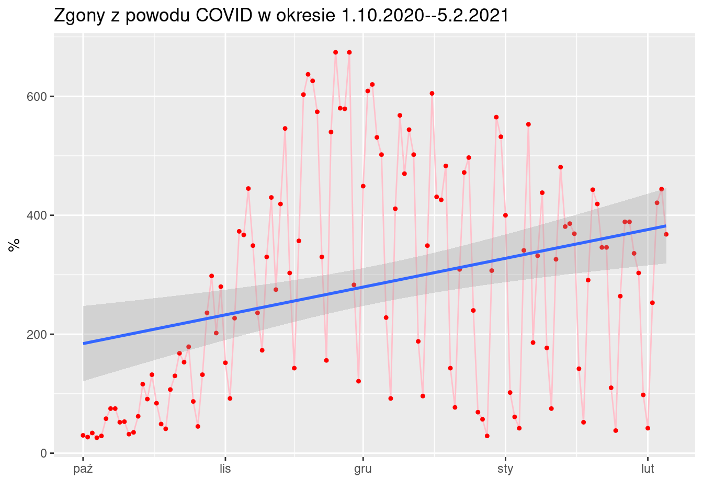
Współczynnik kierunkowy trendu liniowego wynoszący 1.5583885 jest interpretowany jako przeciętna zmiana z okresu na okres. Równanie prostej można zapisać jako:
zgony = 1.5583885 czas + 182.7417569
Interpretacja: w omawianym okresie przeciętnie umierało 1,5 osoby więcej dziennie. Ale dopasowanie linii prostej do danych jest słabe co widać oraz o czym świadczą wartości \(R^2\) (9.2613784%, tj. 9.2613784% zmienności jest objaśniane przez model) oraz średni błąd składnika losowego \(S_e\) (181.6602058). Ten błąd warto porówać do średniej wartości zmiennej objaśmnianej (liczby zgonów), która w omawianym okresie wynosi 283.2578125. Zatem błąd jaki popełniamy stanowi 64.1324609% średniej. Dużo (coś jakby średnio 1 \(\pm\) 0,6)
Inny przykład (nadwaga w PL):
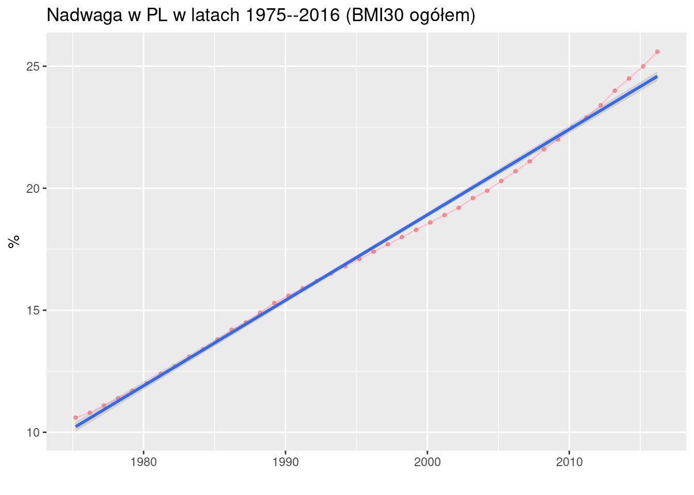
Współczynnik kierunkowy trendu liniowego wynoszący 0.3502796 jest interpretowany jako przeciętna zmiana z okresu na okres. Równanie prostej można zapisać jako:
nadwaga = 0.3502796 czas + 9.8785134
Interpretacja: w omawianym okresie przeciętnie przybywało 0.3502796% osób z nadwagą rocznie. Dopasowanie linii prostej do danych jest bardzo dobre co widać oraz o czym świadczą wartości \(R^2\) (99.4245443%, tj. 99.4245443% zmienności jest objaśniane przez model) oraz średni błąd składnika losowego \(S_e\) (0.3309818). Ten błąd warto porówać do średniej wartości zmiennej objaśmnianej (liczby zgonów), która w omawianym okresie wynosi 17.4095238. Zatem błąd jaki popełniamy stanowi 1.9011537% średniej.
5.7 Szacowanie sezonowości
Wahania sezonowe to systematyczne wahania powtarzające się w ściśle określonych okresach roku, np. miesięczne (k = 12), kwartalne (k = 4) i półroczne (k = 2).
Wahania sezonowe można wyodrębnić w wartościach bezwzględnych (model addytywny) oraz procentach (model multiplikatywny).
- eliminujemy trend w szeregu czasowym poprzez wyliczenie różnic \(d_t\):
\[d_t = y_t − \hat y_t\]
gdzie: \(y_t\) wartości rzeczywiste szeregu czasowego;
\(\hat y_t\) wartości teoretyczne obliczone na podstawie trendu
obliczamy surowe bezwzględne wahania sezonowe (W_sk) dla jednoimiennego podokresu \(k\):
\[W_{sk} = \frac{\sum y_t - \hat y_t}{p} = \frac{d_t}{p}\]
średnich jednoimiennych okresów
- Ustalamy względne wskaźniki sezonowości dla kolejnych podokresów, według formuły:
\[{}_wg_i=\frac{\bar y_i}{y}\]
gdzie:
\(y_i\) – średni poziom dla \(i\)-tego podokresu
\(\bar y\) – średnia w całym okresie
- Bezwzględne wskaźniki sezonowości, które informują, o ile poziom badanego zjawiska w danym okresie różni się (w wartościach absolutnych) od przeciętnego poziomu tego zjawiskaw całym badanym okresie:
\[{}_bg_i=\bar y \cdot ({}_wg_i -1)\]
Metoda wskaźników
Stosowana w przypadku współwystępowania wahań sezonowych z trendem. W wariantach sezonowści addytywnej oraz sezonowości multiplikatywnej
Plik MZM.csv zawiera dane miesięczne dotyczące liczby zwiedzających
Muzeum Zamkowe w Malborku
w podziale
na ogółem oraz gości krajowych i zagranicznych. Przy czym podział na krajowych/zagranicznych jest mocno umowny – wg wyjaśnień pracownika MZM
zwiedzający jest pytany przy zakupie biletu na tę okoliczność.
Dane zostały udostępnione przez biuro MZM w kwietniu 2019 roku.
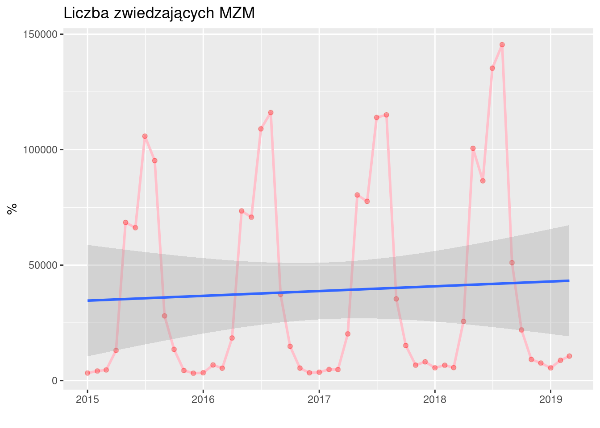
Szacujemy linię trendu liniowego
Interpretacja: w omawianym okresie miesięczna liczba zwiedzających rosła o 174.4149321 osób. Dopasowanie linii prostej jest bardzo słabe (\(R^2\) = 0.3610404% oraz \(S_e\) = 43511.4403132).
Sezonowość uwzględniamy dodając do równania \(d -1\) zmiennych zero-jedynkowych, gdzie \(d\) jest liczbą podokresów (dla danych kwartalnych \(d=4\), dla miesięcznych \(d=12\)). Dla \(k\)-tej zmiennej zero-jedynkowej:
\(z=1\) jeżeli podokres jest równy k, albo zero w każdej innej sytuacji
Czyli pierwsza zmienna zerojedynkowa będzie miała wartość 1 dla stycznia, druga wartość 1 dla lutego itd…
Wygląda to dość pracochłonnie ale np. jeżeli korzystamy z Gretla jest banalnie proste (Gretl sam się połapie ile wynosi \(d\) i doda do równiania tyle zmiennych ile trzeba i jeszcze je odpowiednio przekoduje)
Wynik jest taki:
##
## Call:
## lm(formula = razem ~ trend + miesiac, data = z0)
##
## Residuals:
## Min 1Q Median 3Q Max
## -16360 -3824 -794 3377 21154
##
## Coefficients:
## Estimate Std. Error t value Pr(>|t|)
## (Intercept) -5018.67 3945.68 -1.272 0.21112
## trend 353.06 65.76 5.369 0.0000041754 ***
## miesiac01 455.48 4596.24 0.099 0.92158
## miesiac02 2076.82 4592.01 0.452 0.65365
## miesiac03 1685.77 4588.71 0.367 0.71538
## miesiac04 16594.69 4861.00 3.414 0.00154 **
## miesiac05 77617.14 4854.33 15.989 < 0.0000000000000002 ***
## miesiac06 71807.58 4848.53 14.810 < 0.0000000000000002 ***
## miesiac07 112205.03 4843.63 23.166 < 0.0000000000000002 ***
## miesiac08 113808.97 4839.61 23.516 < 0.0000000000000002 ***
## miesiac09 33420.17 4836.48 6.910 0.0000000326 ***
## miesiac10 11508.11 4834.24 2.381 0.02241 *
## miesiac11 1193.81 4832.90 0.247 0.80623
## ---
## Signif. codes: 0 '***' 0.001 '**' 0.01 '*' 0.05 '.' 0.1 ' ' 1
##
## Residual standard error: 6834 on 38 degrees of freedom
## Multiple R-squared: 0.9809, Adjusted R-squared: 0.9749
## F-statistic: 163 on 12 and 38 DF, p-value: < 0.00000000000000022Interpretacja: w omawianym okresie miesięczna liczba zwiedzających rosła o 353.0555556 osób. Dopasowanie linii prostej jest znakomite (\(R^2\) = 98.0937719% oraz \(S_e\) = 6834.1190407).
Przypominamy: do równania dodajemy \(d-1\) zmiennych (jak dodamy \(d\) to równanie nie da się oszacować); W powyższym przykładzie dodano zmienne styczeń–listopad
(miesiac01–miesiac12) a nie ma zmiennej grudzień.
Jeżeli wszystkie zmienne zero-jedynkowe mają wartość zero, to równanie opisuje
grudzień. Zatem interpretacja współczynników przy zmiennych
miesiac01–miesiac12 sprowadza się do porównania względem grudnia, np.
W styczniu jest przeciętnie 455.48 osób więcej niż w grudniu a sierpniu
113808.97 osób więcej niż w grudniu. (Por wydruk powyżej)
Oczywiście jeżeli grudzień nam nie pasuje jako baza do porównań możemy wybrać inny miesiąc czyli usunąć go z równania a dodać zamiast niego grudzień.